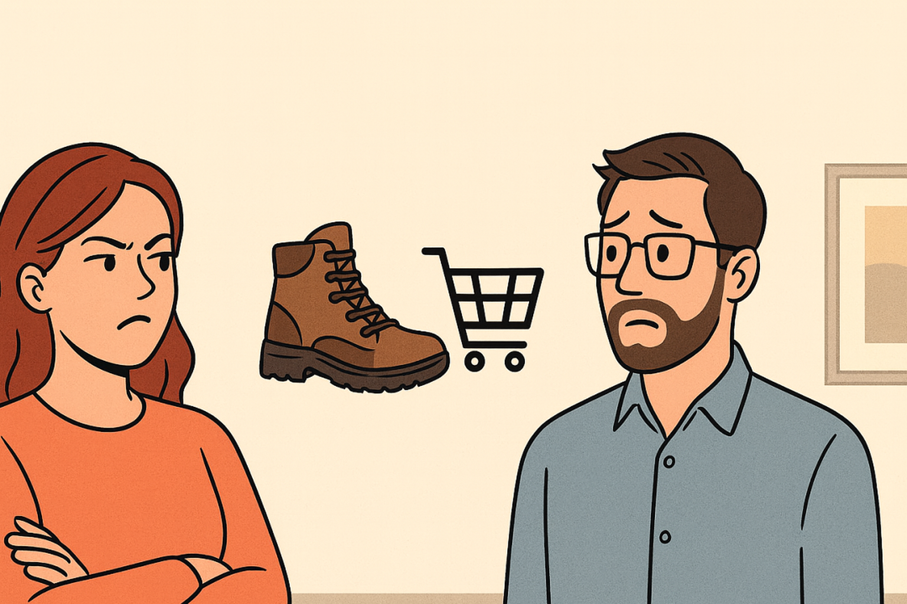

I built my first version of an e-commerce shopping assistant during Aurimas Griciūnas’ End-to-End AI Engineering Bootcamp. It was my capstone project - an experiment in how far agentic workflows could go in making shopping more personal. For testing, I recruited the person whose feedback I trust the most: my wife, Lily.
That trust was tested the day she asked the assistant to recommend office shoes. Simple enough. She had just transitioned into a new role and needed something professional. Instead of suggesting a sensible pair of pumps or loafers, my assistant proudly surfaced… high-end hiking boots.
Why? Because in my test data I had loaded Lily’s old cart filled with outdoor gear. The assistant, drawing from this long-term memory of past carts and orders, confidently decided that boots were her ‘signature preference.’ For Lily, the result was confusing. For me, it was humbling. She gave me that look, eyebrows raised - and I instantly knew I was in trouble.
What happened was a textbook case of memory gone stale. I had engineered the assistant to remember everything: every purchase, every click, every half-forgotten wishlist item. I thought of it as personalization gold. But in practice, it was digital hoarding. The AI couldn’t distinguish between living context and fossilized history. It clung to old signals long past their expiration date, and in doing so, it risked undermining the very trust it was supposed to build.
Aurimas Griciūnas had a line in his article on context engineering that hit me in the gut when I revisited it later: “Consistency and updating - long-term memory can become a liability if not managed well. Stale or incorrect memories can lead to responses that could potentially breach trust.” That was exactly what happened in my living room.
So what do you do when your agent’s memory betrays you? You teach it to forget. The first step was introducing freshness checks. Every user interaction - purchases, carts, searches - was timestamped and assigned a half-life. A pair of shoes Lily looked at last week had a relevance score close to 1.0. A hiking pole she added to a cart six months ago might start at 0.7 but decay toward 0.2 over time. When the assistant searched its vector database for relevant history, those freshness-adjusted scores determined whether an item even made it into the candidate set.
Second, I added a decay mechanism. Inspired by cache eviction strategies, I treated user history like a sliding window. If Lily hadn’t interacted with hiking gear in months, the embeddings representing those cart items slowly lost weight in the retrieval layer. At a certain threshold, they’d be effectively invisible to the assistant unless she explicitly revived them by showing renewed interest. It was like pruning dead branches so the tree could thrive.
Third, I tightened retrieval weighting. Instead of treating all memories as equal, I combined three signals:
Recency (when was the interaction?) Frequency (how often did she interact with similar items?) Contextual overlap (does the embedding of this item align semantically with her current query?)
That last signal was crucial. Hiking boots might have been top of mind six months ago, but semantically they were far from “office shoes.” With contextual similarity layered in, the assistant began prioritizing what was relevant to Lily’s present, not her past.
Finally, I added a relevance audit loop. Before returning a recommendation, the assistant had to “justify” its picks internally: does this suggestion match at least two of the three signals (recency, frequency, semantic fit)? If not, it got suppressed. That safeguard caught a lot of the ghosts before they could resurface.
These weren’t perfect solutions, but the difference was night and day. The next time Lily asked for office shoes, the assistant focused on her recent browsing of blouses and workwear, pulling in complementary footwear. No more hiking boots sneaking into boardroom scenarios.
And here’s the deeper irony: the assistant became smarter the moment I taught it to forget. That stumble with Lily wasn’t just a funny story - it became a design principle etched into my thinking. Long-term memory is powerful, but without curation it’s a liability. Too little, and your AI feels forgetful. Too much, and it dredges up ghosts that don’t belong. The art is in striking balance, and the tools are often surprisingly old-school: timestamps, decay functions, weighting heuristics.
Looking back, I’m grateful this mistake happened early, in the safe environment of a bootcamp project and not in production with real customers. It gave me a chance to wrestle with a fundamental tension of agent design: how to honor a user’s history without letting the past hijack the present.
Every time I see “hiking boots” in my test logs, I smile. It’s not just a bug I fixed - it’s a reminder.
Sometimes the most important part of memory engineering… is knowing what to let go.